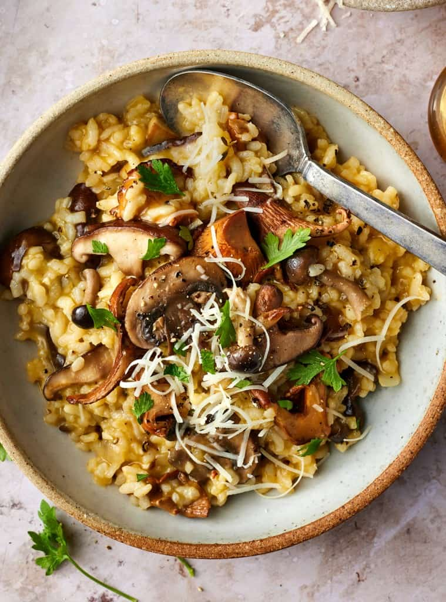

Risotto

Description
They're those rare occasions when you actually want to stand at the stove, stirring and stirring and stirring, because you're also spending time with someone you love. The fact that all that stirring results in a comforting, flavorful meal is just the cherry on top.
Simple and elegant, this mushroom risotto makes a fantastic dinner on its own. But if you're craving a larger meal, you have plenty of great side dish options. It goes nicely with a quick veggie side dish like sauteed spinach, green beans, or roasted broccoli.
Ingredients
- Shiitake mushrooms
- Arborio Rice
- Olive Oil
- Onion and Garlic
- White Wine
- Vegetable Broth
- Pecorino cheese
- Salt and Pepper
Steps
- Heat 2 tablespoons of the olive oil in a Dutch oven or large, deep skillet over medium heat. Add the mushrooms, ½ teaspoon of the salt, and several grinds of pepper and toss to coat. Cook, stirring only occasionally, for 8 minutes, or until soft and browned. Remove from the pan and set aside. Work in batches if necessary.
- Wipe out the pan and return it to the heat. Add the remaining 2 tablespoons olive oil, the onion, and the remaining ¼ teaspoon sea salt. Cook, stirring occasionally, for 5 to 8 minutes, or until softened. Stir in the garlic, thyme, and rice. Let cook for 1 minute, then add the wine. Stir and cook for 1 to 3 minutes, or until the wine cooks down.
- Add the broth ¾ cup at a time, stirring constantly and allowing each addition of broth to be absorbed before adding the next. With the final addition of broth, stir two-thirds of the sautéed mushrooms into the risotto. Cook until the risotto is creamy and the rice has a slight al dente bite. Stir in the cheese and season to taste.
- Top with the remaining sautéed mushrooms, garnish with parsley, and serve with more grated cheese, if desired.